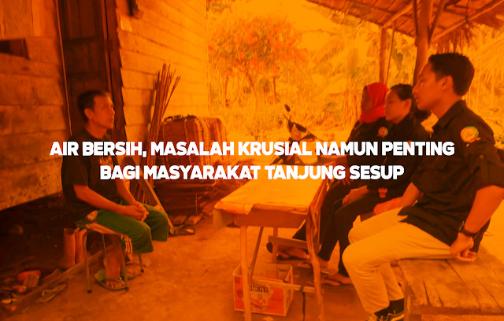

Air Bersih, Masalah Krusial Namun Penting Bagi Masyarakat Tanjung Sesup
Himpunan Mahasiswa Kundur Tanjungpinang-Bintan pada tanggal 10-12 Agustus 2020 telah melaksanakan Latihan Kepemimpinan (LK) Tingkat II. Kegiatan ini merupakan kegiatan tahunan yang wajib dilaksanakan oleh HIMK dalam mengabdikan diri pada masyarakat. Latihan Kepemimpinan tingkat II kali ini dilaksanakan di Pulau Kundur yang dibagi atas 3 penempatan lokasi yaitu di Tanjung Sesup Kecamatan Kundur, Kobel Laut Kecamatan Kundur Barat, dan Sanglang Kecamatan Kundur Barat. LK 2 tahun ini diikuti oleh 10 peserta dari kader HIMK yang dibagi menjadi 3 kelompok untuk 3 lokasi. Pembagian kali ini saya ditempatkan di lokasi Tanjung Sesup Kecamatan Kundur bersama rekan saya Delvin Kurnia Sandi, dan Nuraida. Adapun tujuan dari kegiatan LK 2 ini merupakan observasi dari kegiatan LK 1 yang sebelumnya telah dilakukan untuk mengimplementasikannya pada LK 2 ini dengan melakukan pengabdian kepada masyarakat untuk meneliti permasalahan apa saja yang didapati yang diharapkan setiap permasalahan yang ada boleh mendapat solusi yang akan menjadi obat bagi masyarakat setempat. Tujuan inipun sesuai dengan tema yang disampaikan oleh Kakanda Muslim Hamdi selaku Ketua Umum Himpunan Mahasiswa Kundur (HIMK) Tanjungpinang-Bintan dalam memberikan arahan kepada peserta. Hari pertama dalam kegiatan LK 2 ini, kami sudah mendapati beberapa permasalahan yang membuat masyarakat resah yaitu masalah air bersih merupakan hal yang paling fatal bagi kehidupan manusia. Dimana setiap hari manusia membutuhkan air bersih untuk minum, memasak, mandi, mencuci dan sebagainya. Dengan air yang bersih tentunya membuat kita terhindar dari penyakit. Dapat diketahui, saat ini air bersih merupakan barang yang langka di negeri ini. Hal ini juga dirasakan pada masyarakat Kelurahan Gading Sari tepatnya di RT.001/RW.006 Tanjung Sesup yang mengeluh dari dulu mengenai permasalahan ini. Hampir setiap warga yang ada di wilayah tersebut memperoleh air bersih pada PDAM Tirta Karimun yang berlokasi di daerah Tempan, Lubuk. Namun, PDAM tidak berjalan semestinya dikarenakan sumber PDAM tersebut merupakan waduk penampungan air bekas penggalian bukan sumber air pada umumnya sehingga PDAM tersebut menampung air hujan untuk bisa dialirkan ke rumah warga. Isu yang didapati oleh masyarakat terkait PDAM adalah kasus korupsi dari Pengelolaan PDAM Tirta Karimun yang menghentikan pendistribusian air selama 2 hingga 3 tahun terakhir sampai pada saat ini. Dengan adanya hal ini, masyarakat harus mencari sumber air bersih yang cukup jauh dari permukiman warga. Sekitar 5 sampai 10 menit untuk dapat tiba di sumber air bersih. Sumber tersebut adalah sumur umum sekaligus tempat pemandian umum yang dibangun dari Dana Aspirasi DPRD Kabupaten Karimun. Namun menurut masyarakat setempat pembangunan sumur umum tersebut tidak sesuai dengan harapan karena menurut masyarakat lokasi pembangunannya tidak melalui musyawarah bersama masyarakat. Dengan minimnya air bersih terkadang masyarakat juga memanfaatkan air hujan untuk dikonsumsi. Untuk tiba di sumur umum masyarakat harus melewati jalan tanah kuning bergelombang dan berlubang untuk mengambil air bersih apabila turun hujan maka tanah yang dilalui menjadi berair dan berlumpur serta licin yang terkadang membuat masyarakat yang membawa air sering tersepeleset dan terjatuh. Tak heran jika ada beberapa masyarakat yang terpaksa membeli air setiap hari dengan harga yang cukup mahal jika dikalikan untuk setiap bulannya. Masyarakat memang memiliki sumur pribadi disetiap rumah namun air dari sumur tersebut tidak layak untuk digunakan oleh masyarakat karena kualitas air yang asam, kelat dan payau jikalau air tersebut digunakan akan terasa perih dimata dan lengket di badan. Sehingga air di wilayah ini dikategorikan sebagai air tidak layak komsumsi. Asam, kelat, dan payaulah yang menjadi keresahan masyarakat untuk mengomsumsinya. Sumur umum yang dibangun memang memiliki air yang bersih namun untuk dijadikan layak konsumsi harus diuji diterlebih dahulu hal ini di diskusikan bersama masyarakat di Masjid A-Tohirin dalam Kegiatan Latihan Kepemimpinan tingkat II yang diadakan oleh Himpunan Mahasiswa Kundur Tanjungpinang-Bintan. Dalam diskusi tersebut, agar air layak dikomsumsi harus ada pengujian terhadap kualitas air oleh Dinas Kesehatan untuk mengatasi masalah ini. Solusi lain juga di diskusikan bersama masyarakat dengan menyediakan alat semacam filter yang mampu untuk menyaring air hingga air layak untuk di konsumsi masyarakat. Dengan permasalahan yang ada di daerah tersebut harapan masyarakat kiranya Pemerintah mampu untuk mengatasinya dan terlebih lagi air sebagai kebutuhan pokok bagi masyarakat di daerah Tanjung Sesup. Jika masalah air bersih dapat diatasi maka permasalahan lain juga diharapkan teratasi dengan baik.
Penulis: Elvin Yofinda Salko